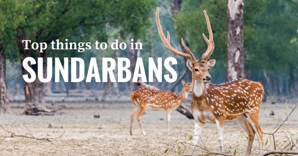
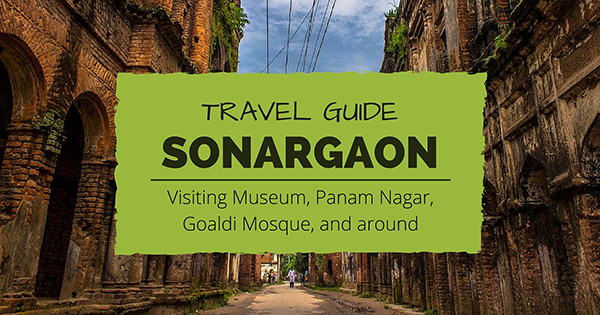

Sundarbans: Top 08 things to do for the best experience
on Feb 5, 2019 by Paul

A list of the top things to do for the best experience while visiting Sundarbans, the largest mangrove forest
on earth and a UNESCO world heritage site. Check them before booking a Sundarbans tour with any operator [...]
Read More
Sonargaon Travel guide: Visiting Museum, Panam Nagar, and around
on Mar 1, 2019 by Harry

Details on how to visit Sonargaon museum, Panam Nagar, Goladi Mosque, and around
including visiting hours, off days, ticket price, picnic spots, contact no [...]
Read More